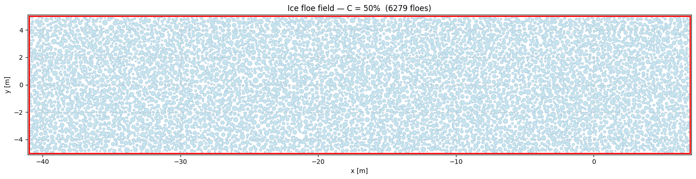
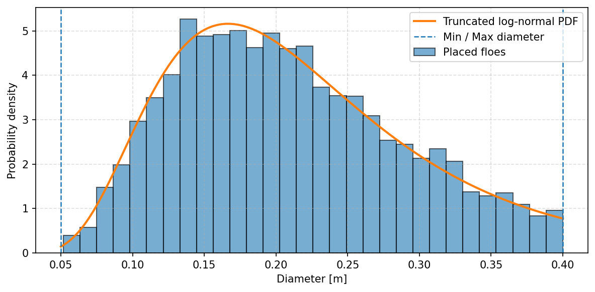

01
Random placement
Floe diameters are sampled from a truncated log-normal distribution and placed one-by-one at random positions, rejecting overlaps and out-of-domain locations.
Fast and effective for concentrations up to approximately 60%.
Master thesis · OSK Design
Two Python scripts for creating controlled ice-floe fields and exporting them as injection data for CFD–DEM simulations.

The objective
The master-thesis workflow requires floe fields with a prescribed concentration, size distribution and injection timing. The scripts build a large upstream field, prevent initial overlap, and export one time-bunched CSV per ship speed for direct use in STAR-CCM+.
01 — Two algorithms
01
Floe diameters are sampled from a truncated log-normal distribution and placed one-by-one at random positions, rejecting overlaps and out-of-domain locations.
Fast and effective for concentrations up to approximately 60%.
02
Floes are first placed at a reduced size, then progressively enlarged with overlap relaxation. Effective radii enforce a defined clearance between the real floes.
Designed for dense fields: the thesis demonstrates a field at 80% concentration with a 3 mm minimum gap.

02 — Controlled inputs
Each generated field is checked against its target concentration and diameter distribution. The histogram compares the placed floes with the specified truncated log-normal law.
For dense fields, the progressive-growth method also verifies the final minimum clearance between every pair of floes before export.

03 — Simulation-ready outputs
Floe centre coordinates and radii provide a transparent geometry record for inspection and repeatable generation.
The full field can be injected at one time to visually check concentration, gaps and distribution in STAR-CCM+.
Each speed receives time-bunched injection data, ensuring that the designed ice field reaches the ship over the intended duration.
What I learned
Generating the field is part of the modelling: concentration, packing and injection timing all shape the CFD–DEM problem.
Seeds, prescribed distributions and exported files make each simulation condition traceable.
Random placement becomes inefficient at high concentration; progressive growth expands the reachable range.
Circular floes are convenient but introduce geometric limitations in very dense pack ice, which the thesis discusses explicitly.
Master thesis · OSK Design